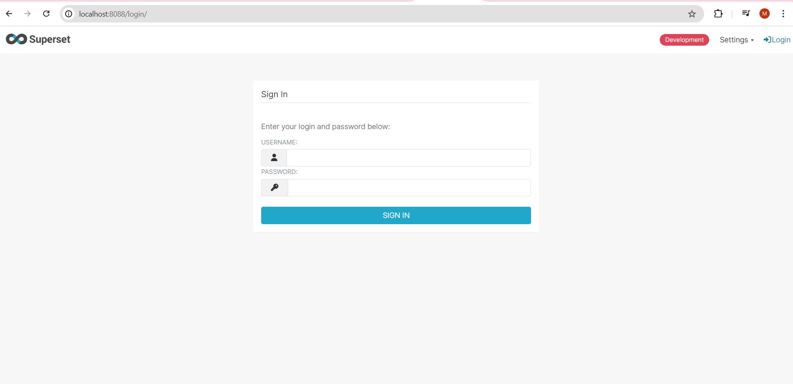

Instalação do Apache Superset
- Tutorial para usuários do linux.
- Para usuários windows, utilizar o WSL.
1. Pré-requisitos
1.1 Docker & Docker-Compose
- O Docker é uma plataforma de containerização que facilita a criação, o envio e a execução de aplicações em contêineres.
- O Docker-Compose é uma ferramenta para definir e gerenciar multi-contêineres Docker.
Para instalar o Docker e o Docker-Compose, execute os comandos abaixo no terminal:
sudo snap install docker
sudo apt install docker-compose1.2 Git
Para clonar repositórios do GitHub, você precisará do Git, um sistema de controle de versão distribuído:
sudo apt install git2. Clonar o Repositório
Clone o repositório do Apache Superset para obter os arquivos necessários para a instalação. Após clonar o repositório, use o comando cd para mudar o diretório de trabalho para o diretório do projeto clonado.
git clone https://github.com/apache/*Superset*.git
1cd *Superset*- 1
- O comando cd (change directory) é usado no terminal para navegar entre diretórios.
3. Conexão com fonte de dados
Se você planeja usar o Google BigQuery como uma fonte de dados, adicione a biblioteca sqlalchemy-bigquery aos requisitos locais. Isso garante que o Superset possa se conectar ao BigQuery.
echo "sqlalchemy-bigquery" | sudo tee -a ./docker/requirements-local.txtVocê pode se conectar a outras fontes de dados, como:
PostgreSQL: Adicione a biblioteca
psycopg2aos requisitos locais para conectar ao PostgreSQL.echo "psycopg2" | sudo tee -a ./docker/requirements-local.txtPara mais informações, acesse PostgreSQL.
MySQL: Adicione a biblioteca
mysqlclientaos requisitos locais para conectar ao MySQL.echo "mysqlclient" | sudo tee -a ./docker/requirements-local.txtPara mais informações, acesse MySQL.
SQLite: Adicione a biblioteca
sqliteaos requisitos locais para conectar ao SQLite.echo "sqlite" | sudo tee -a ./docker/requirements-local.txtPara mais informações, acesse SQLite.
Microsoft SQL Server: Adicione a biblioteca
pyodbcesqlalchemyaos requisitos locais para conectar ao SQL Server.echo "pyodbc" | sudo tee -a ./docker/requirements-local.txt echo "sqlalchemy" | sudo tee -a ./docker/requirements-local.txtPara mais informações, acesse Microsoft SQL Server.
Amazon Redshift: Adicione a biblioteca
sqlalchemy-redshiftaos requisitos locais para conectar ao Amazon Redshift.echo "sqlalchemy-redshift" | sudo tee -a ./docker/requirements-local.txtPara mais informações, acesse Amazon Redshift.
Google Sheets: Adicione a biblioteca
gsheetsdbaos requisitos locais para conectar ao Google Sheets.echo "gsheetsdb" | sudo tee -a ./docker/requirements-local.txtPara mais informações, acesse Google Sheets.
4. Lançar o Superset
4.1 Versão para Desenvolvimento
Para iniciar o Apache Superset em um ambiente de desenvolvimento (ideal para testes e desenvolvimento), use o comando abaixo. Este comando iniciará todos os serviços necessários para o Superset, como o banco de dados e o servidor web.
docker-compose up4.2 Versão para Produção
Para iniciar o Apache Superset em um ambiente de produção (mais otimizado e seguro para uso real), use os seguintes comandos. O primeiro comando baixa as imagens do Docker necessárias, e o segundo comando inicia os contêineres em segundo plano (-d).
docker-compose -f docker-compose-non-dev.yml pull
docker-compose -f docker-compose-non-dev.yml up -d4.3 Executar uma Versão Específica
Se você precisar de uma versão específica do Superset, use os comandos abaixo para fazer checkout do código dessa versão e iniciar os contêineres.
git checkout 3.0.0
TAG=3.0.0 docker-compose -f docker-compose-non-dev.yml pull
TAG=3.0.0 docker-compose -f docker-compose-non-dev.yml up -d5. Acessar o Superset
Após iniciar o Superset, acesse a interface web pelo endereço: http://localhost:8088/
5.1 Login Inicial
Use as credenciais padrão para o primeiro login:
- Login: admin
- Senha: admin

5.2 Alterar as Credenciais
Para aumentar a segurança, é recomendável alterar as credenciais padrão. Para fazer isso:
- Vá para Settings > List Users > +
- Adicione um novo usuário ou edite o usuário existente.
6. Configurar Acesso ao Google BigQuery
6.1 Obter a Chave de Acesso (Arquivo JSON)
Para conectar o Superset ao Google BigQuery, você precisará de uma chave de serviço JSON do Google Cloud. Siga estes passos:
- Acesse o Google Cloud Console: Console Google Cloud
- Navegue até a conta de serviço relevante.
- Clique em Adicionar Chave > JSON e faça o download do arquivo.

6.2 Dados do Google Sheets para o BigQuery
Para importar dados do Google Sheets para o BigQuery, siga o guia detalhado disponível neste link:
Supermetrics: Query Google Sheets in BigQuery